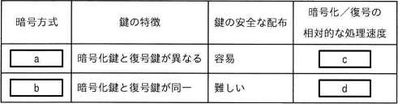

業務要件定義が曖昧なことが原因で起こり得る問題
業務要件定義とは、要件定義プロセスを構成するタスクのひとつで、業務内容、業務ルール・制約、業務用語など、システムが業務上実現すべき要件を取りまとめ決定する工程- 業務要件定義があいまいだと、開発途中での仕様変更や仕様追加等が起こりやすくなります。使用変更等が発生した場合、システムの設計に戻ってやり直すことになり手戻りが発生します。手戻りはスケジュール遅延やコスト増を引き起こします。
- 受入テストは、完成したシステムが要件定義の内容を満たしているかどうかという観点で行われるため、要件定義が曖昧だと適切なテストを実施することができません。
障害に備えるために4台のHDDを使い、1台分の容量をパリティ情報の記録に使用するRAID5を構成する。1台のHDDの容量が1Tバイトのとき、実効データ容量はおよそ何バイトか。
A. 3バイト- RAID（Redundant Arrays of Independent Disks: レイド）は、複数台の安価な磁気ディスクを組み合わせ、1つの仮想的なディスクとして扱うことで信頼性や性能を向上させる技術です。
- RAIDにはいくつかのレベルがありますが、このうちRAID5は、データ本体とともにパリティという誤り訂正符号を複数のディスクに分散して書き込む方式で、耐障害性、アクセスの高速化、大容量化のすべてを得ることができます。
- 本問では、4台のHDDを使い、そのうち1台分の容量をパリティに使用するとあるため、実行データ容量は「HDD3台分」ということになります。HDD1台あたりの容量は1Tバイトなので3Tバイトが正解です。
技術開発戦略において作成されるロードマップを説明しているものはどれか。
- ロードマップとは、縦軸に対象の技術・製品・サービス・市場を、横軸には時間の経過をとり、それらの要素の将来的な展望や進展目標を時系列で表した図表です。
- 時間軸に沿って目標やマイルストーンを段階的に示すことで、産学官のすべての関係者が方向性を共有すること、長期にわたるプロジェクトや研究開発の進行状況の評価を容易にすること、関連技術開発との整合性をチェックできるようにするなどの狙いがあります。例として、技術戦略ロードマップや製品ロードマップなどがあります。
- 横軸が時間であることがポイント
インターネットを介して個人や企業が保有する住宅などの遊休資産の貸し出しを仲介するサービスや仕組みを表す用語として最も適切なものはどれか。
A. シェアリングエコノミー- シェアードサービス」とは、グループ企業内に共通的に存在する（主に間接部門の業務）を1か所に集中・統合して独立させ、それぞれの企業で共有してサービス提供を受けることを言います。コストの削減と経営の効率化を目的とします。
- 「シェアウェア」とは、一定期間は無料で使用できますが、使用期間後も継続して利用する場合は、ライセンス料金を開発者に支払う方式のソフトウェアです。
- 「シェアリングエコノミー」とは、モノやサービスを所有するのではなく、インターネット上のプラットフォームを介して個人と個人の間で使っていないモノ・場所・技能などを貸し借り・売買することによって、共有していく経済の動きのことです。貸主は遊休資産の活用による収入が得られ、借主は購入や維持にかかるコストを削減できる利点があります。カーシェアやライドシェア、民泊のマッチングサービス、フリマアプリ、クラウドソーシング、クラウドファインディング等が代表例です。
- 「ワークシェアリング」とは、仕事(work)と共有(sharing)を組み合わせた言葉で、人々の間で雇用を分かち合うことを意味します。一人当たりの労働時間を短縮したり仕事の配分を見直したりすることによって、労働の負荷を減らすとともに新たな雇用を生み出す仕組みです。雇用維持や雇用創出を目的とします。
ESSIDをステルス化することによって得られる効果として適切なものはどれか。
A. アクセスポイントへの不正接続リスクを低減できる。- 無線アクセスポイントは、自身の存在を周囲に知らせるため、SSIDを含むビーコンという情報を定期的に発信しています。Wi-Fi接続機能を起動するときに候補となるアクセスポイントが表示されるのは、このビーコンを受信しているためです。
- ESSIDのステルス化は、アクセスポイントが行っているビーコンの発信を停止し、OSのアクセスポイントの自動検出機能などでESSIDを発見できないようにするセキュリティ対策です。ステルス化によりその場に環境が無線LAN環境があることを発見されにくくなるため、不正な利用者からのアクセスを防ぐ効果が期待できます。
システム監査で用いる判断尺度の選定方法に関する記述として最も適切なものはどれか。
A. システム監査のテーマに応じて、システム管理基準以外の基準を使用してもよい- 監査の判断尺度とは、システム監査人が監査対象を点検・評価・検証する際に使用する客観的な基準であり、その状態の適切・不適切性やその度合いを判断するための拠り所となる資料です。
- システム監査にあたっては、原則としてはシステム管理基準が判断尺度となりますが、情報セキュリティの監査を目的とするときは情報セキュリティ管理基準、さらにloTシステムのセキュリティを監査する場合はloTセキュリティガイドラインなど、監査テーマに応じた基準・ガイドライン等を判断尺度として利用することが望まれます。必ずしも基準・ガイドライン等の全項目を使用する必要はなく、必要に応じて適宜選択した部分だけを判断尺度として利用することもできます。
システムの利用者認証に関する記述のうち、適切なものはどれか。
A. 情報システムが利用者の本人確認のために用いる、数字列から成る暗証番号のことをPINという。- １回の認証で、複数のサーバやアプリケーションなどへのログインを実現する仕組みをシングルサインオンという。
- サーバから送信される予測困難な値（チャレンジ）と利用者の認証情報を合わせたデータ（レスポンス）を用いて認証を行う方式をチャレンジレスポンス認証という。通信経路上に固定パスワードを流すことなく認証をすることができます。
- 指紋や声紋など、身体的な特徴を利用して本人認証を行う仕組みをバイオメトリクス認証という。
- 特定の数字や文字の並びではなく、位置についての情報を覚えておき、認証時には画面に表示された表の中で、自分が覚えている位置に並んでいる数字や文字をパスワードとして入力する方式をマトリクス認証という。
- 利用者が知っている・持っている・有している情報のうち２種類以上の要素を組み合わせて認証を行う方式を多要素認証という。
- PIN(Personal Identification Number)は、4桁から6桁程度の数字で構成される暗証番号のことです。クレジットカードやキャッシュカードの利用時や、スマートフォンのロック解除時などに入力を求められる番号がPINの例です。PINは単体で使われるというよりは、他の知識認証や所有物認証を強化する目的で使用されます。
史跡などにスマートフォンを向けると、昔あった建物の画像や説明情報を現実の風景と重ねるように表示して、観光案内をできるようにした。ここで活用した仕組みを表す用語として最も適切なものはどれか。
A. AR- AR(Augmented Reality)は、拡張現実とも呼ばれ、現実世界の情報にデジタル合成などによって作られた情報を重ねて、人間が見る現実世界を拡張する技術です。VR(Virtuak Reality)がコンピュータグラフィックスなどで構築された現実感と現実を差し替えるのに対し、ARは現実んも一部を改変するという点があります。設問で挙げられている地図案内のほかにも、ポケモンGOやドラクエウォークなどのゲームアプリ、家具や家電の配置シミュレーション、髪型や衣装のフィッティングなどの活用事例があります。
- GUI(Graphical User Interface)の略。現在のPCでは当たり前になっている。画面上にアイコンやメニューなどの操作対象や選択項目を表示し、それをマウスなどのポインティングデバイスによって操作することでコンピュータを操作する仕組みです。
- VR(Virtual Reality)の略で仮想現実のこと。コンピュータなどによって作り出された世界をコンピュータグラフィックスなどを利用してユーザーに体験させる技術です。見せるだけではなく、ユーザーが仮想世界に働きかけることもでき、人間の五感のいずれかにその反応が返ってくることで人工的な現実感を味わうことができます。
- メタバースは、多くのユーザーがアバターを使ってコミュニケーションを取ることができるインターネット上の仮想空間であって、自己投射性・没入感、リアルタイム性、オープン性などを備えるものをいいます。メタ（超越）とユニバース（宇宙）を合わせた造語です。
PKIにおけるCA(Certificate Authority)の役割に関する記述として、適切なものはどれか。
A. 利用者の公開鍵に対する公開鍵証明書の発行や失効を行い、鍵の正当性を保証する。- CA(Certification Authorihty:認証局)は、公開鍵暗号方式を用いたデータ通信において、利用者の公開鍵の正当性を保証するためのデジタル証明書を発行する機関です。公開鍵基盤(PKI:Public Key Infrastructure)において、次のような役割を担っています。
- 申請者の公開鍵にデジタル署名を付したデジタル証明書jを発行する
- CRL（証明書失効リスト）を発行する
- CPS（認証局運用規定）を公開する
- デジタル証明書を検証するための認証局の公開鍵を公開する
- 認証局の秘密鍵を厳重に管理する
- 公開鍵暗号方式のアルゴリズムは公開されていて、誰でも公開鍵と秘密鍵のペアを作成することができるため「なりすまし」が行われるリスクがあります。PKIでは通信相手が本物であるかどうかの確認に公開鍵証明書を使用します。公開鍵証明書は現実世界における身分証明書に相当する。利用者の申請を受けて、公開鍵証明書を発行する第三者機関がCAです。
-
”インターネットと内部ネットワークの間にあって、内部ネットワーク上のコンピュータに代わってインターネットにアクセルする”
⇩
プロキシの役割 -
”インターネットと内部ネットワークの間にあって、バケットフィルタリング機能などを用いてインターネットから内部インターネットへの不正アクセスを防ぐ”
⇩
ファイアウォールの役割 -
”利用者に指定されたドメイン名を基にIPアドレスとドメイン名の対応付けを行い、使用者を目的のサーバにアクセスされる”
⇩
DNS(Domain Name System)の役割 -
”利用者の公開鍵に対する公開鍵証明書の発行や失効を行い、鍵の正当性を保証する。”
⇩
CAの役割
ある企業が、顧客を引き付ける優れたUX(User Experience)やビジネスモデルをデジタル技術によって創出し、業界における従来のサービスを駆逐してしまうことによって、その業界の既存の構造が破壊されるような現象を表す用語として、最も適切なものはどれか。
A. デジタルディスラプション- デジタルサイネージは、デジタル技術を活用して平面ディスプレイやプロジェクタなどによって映像や情報を表示する広告媒体です。電子看板とも呼ばれます。
- デジタルディスラプション（デジタルによる破壊）は、デジタル技術を利活用した新たなイノベーションやビジネスモデルが急速に普及することによって、市場構造が変わり既存ビジネスが破壊される現象です。ＤＸが引き起こす破壊的変化と位置付けられます。Amazonが多くの小さな書店を閉店に追い込んだことなどがその事例を言えます。フリマアプリとリサイクルショップ、ストリーミングサービスとCD/DVDレンタルショップなどもデジタルディスラプションの例になるかもしれません。
- デジタルディバイドは、パソコンやインターネットなどの情報技術（IT）を使いこなせる者と使いこなせない者の間に生じる、待遇、貧富、機会の格差のことです。情報技術が社会的な格差を拡大、固定化してしまう現象を指します。
- デジタルトランスフォーメーションは、クラウド、モバイル、ＡＩ、loTなどのデータとデジタル技術を戦略的に活用してビジネスを変革し、競争上の優位性を確立することです。
インターネットに接続されているサーバが、1台でメール送受信機能とWebアクセス機能の両方を提供しているとき、端末のアプリケーションプログラムがそのどちらの機能を利用するかをサーバに指定するために用いるものはどれか。
A. ポート番号- ポート番号は、コンピュータがデータ通信を行う際に通信先のアプリケーションプログラムを特定するための番号です。
ネットワーク上で相手コンピュータにデータを送信する場合、通信相手のコンピュータはIPアドレスで指定しますが、そのコンピュータで動いているどのプログラムにデータを送るかを指定する情報がポート番号です。IPアドレスを建物の住所に例えるなら、ポート番号は部屋番号に相当します。
コンピュータでは同時に多くのアプリケーションが動作しています。コンピュータの立場になって考えると、外部からデータが送られてきた際、IPアドレスだけではどのアプリケーションに対して送られたデータなのかわかりません。このとき、ポート番号があれば宛先のアプリケーションがわかるので、コンピュータは適切なアプリケーションに受信データを届けることができるというわけです。 - IPアドレスは、ネットワークに接続されたコンピュータを一意に識別する番号です。通信相手となるコンピュータの指定に使用します。
- ドメインは、IPアドレスに関連付けて、ネットワークに接続されたコンピュータを一意に識別する文字列です。通信相手となるコンピュータの指定に使用します。
- ホスト名は、そのドメイン上のあるコンピュータを示すなまえです。"www.example.com"で言えば、"www"の部分がホスト名です。
SSDのすべてのデータを消去し、復元できなくする方法として用いられているものはどれか。
A. Secure Erase- Secure Erase（セキュアイレース）は、SSF/HDDのアドレスマッピング（物理アドレスと論理アドレスの紐付け）を工場出荷時の状態に戻すことでデータを消去する操作です。SSD/HDDに搭載されている機能であり、BIOS操作や専用のソフトウェアから実行することができます。SSDではすべて0や乱数で上書きする方法では古いデータが媒体上に残る可能性があるため、Secure Eraseによる消去が推奨されます。
- 磁気消去は、協力な磁気照射を行うことで、HDD（磁気記憶装置）に記憶されているデータを消去し、復元できないようにする方法です。SSDは磁気記憶ではないのでこの方法は使えません。
- セキュアブートは、コンピュータの起動時にOS記号ファイルやドライバのデジタル署名を検証し、起動プロセスを認証することで、不正なプロブラムの実行を未然に防止する仕組みです。
- データクレンジングは、システム間のデータ移行やデータ分析がしやすくなるように、データ形式の統一、欠損値の補完、単位の統一、異常値の処理などを行ってデータを整理する作業です。
次のOSのうち、OSS（Open Source Software）として提供されるものだけをすべて挙げたものはどれか。
A. Android, Free BSD, and Lunux- Androidは、Google社が開発しているLinuxベースのオープンソースのOSです。スマートフォンやタブレットはもちろんのこと、テレビやプロジェクタ、カーナビなど幅広い製品に搭載されています。
- Free BSDは、UNIXベースのオープンソースのOSです。Linuxがリーナス・トーバルズ氏が中心となって開発されたのに対し、Free BSDはカリフォルニア大学バークレー校により開発されたものです。
- iOSは、Apple社が開発しているモバイル端末用のOSです。オープンソースではありません。
- Linuxは、世界中のプログラマーや企業により改良され、発展し、世界的に利用されているオープンソースのOSです。スマートフォン用OSのAndroidもLinuxがベースになっています。
ITガバナンスに関する次の記述中のaに入れる字句として、最も適切なものはどれか。
- 経営者は、現在と将来の事業の目的を支援する観点で、効果的、効率的かつ受容可能な現在と将来のITの利用について評価する。
- ITガバナンスは、企業が競争優位性を構築するために、IT戦略の策定・実行をガイドし、あるべき方向へ導く統制活動であり、ITへの投資・効果・リスクを継続的に最適化するための組織的な仕組みです。ITガバナンスの標準化企画であるJIS Q 38500では「組織のITの現在および将来の利用を指示し、管理するシステム。...組織におけるITの利用に関する戦略及び方針を含む」と定義しています。
- ITガバナンスは組織の事業戦略と一体となって実行され、事業戦略を支援・強化するものでなければなりません。このため効果的なITガバナンスとするためには、現在と将来の組織の事業戦略を策定する際に、現在と将来のITの能力を考慮に入れる必要がありますし、ITの利用策について評価するときには、経営資源や事業戦略との整合性を考える必要があります。
- JIS Q 36500では、ITガバナンスにおける経営者の役割として次の3つを挙げています。
- 現在と将来のIT利用について評価する
- IT利用の計画と方針を準備し、実施を指示する
- 方針への適合、計画の実績をモニタリングする
データサイエンティストの役割に関する記述として、最も適切なものはどれか。
A. 機械学習や統計などの手法を用いてビッグデータを解析することによって、ビジネスに活用するための新たな知見を獲得する。- データサイエンティストは、DXの推進において、データを活用した業務変革や新規ビジネスの実現に向けて、データを収集・解析する仕組みの設計・実装・運用を担う人材です。ビッグデータなどの大量のデータを、数学的、統計学的、機械学習、データマイニングなどの様々な手法を駆使して分析し、ビジネス上の課題の解決を支店することを役割とします。
- 要件定義に合致したシステムを設計・構築するのは、システムアーキテクトの役割です。
- 情報システムや組込みシステムに係るリスクを分析し、必要なコントロールを検証・評価するのは、システム監査技術者の役割です。
- サイバーセキュリティに関する専門的な知識・技能を活用して企業や組織における安全な情報システムの企画・設計・開発・運用を支援するのは、情報処理安全確保支援士の役割です。
スマートフォンなどのタッチパネルで広く採用されている方式であり、指がタッチパネルの表面に近づいたときに、その位置を検出する方式はどれか。
A. 静電容量方式- 感圧式（抵抗膜式）は、わずかなスキマを開けて配置された2つの抵抗膜が押されて接触し、通電することでタッチ位置を検出する方式です。ATMや駅の券売機、工場の操作画面など信頼性が求められる用途に使用されています。手袋をしていても操作できるのが特徴のひとつです。
- 光学式（赤外線式）は、画面の枠に備え付けられた赤外線投影装置などを用いて、赤外線の反射光などを測定することでタッチ位置を検出する方式です。大型化がしやすいとうメリットがあります。
- 静電容量方式は、指が画面に近づいたときに生じる静電容量の変化によりタッチ位置を検出する方式です。画面の四隅で測定した電流量で座標を求める「表面型」と、格子状の2つの電極パターンで座標を求める「投影型」があります。スマートフォンやタブレットで採用されているのは後者の投影型です。投影型はマルチタッチに対応しています。
- 電極誘導方式は、磁界を発生させる専用のペンなどを用いて、タッチした部分に生じる時期誘導によりタッチ位置を検出する方式です。Appleペンシルなどがこの仕組みを採用しています。
システム監査人の役割として、適切なものだけをすべて挙げたものはどれか。
A. 監査手続の種類、実施時期、適用範囲などについて、監査計画を立案する。A. 監査報告書にある改善提案に基づく改善の実施状況をモニタリングする。
- 適切。システム監査人は、実施知るシステム監査の目的を効果的かつ効率的に達成するために、監査手続の種類、実施時期、適用範囲等について、適切な監査計画を立案しなければなりません。監査計画は、中長期計画、年度計画、個別監査計画に分けて策定されます。
- 不適切。監査報告書は、監査の終了後にシステム監査人により作成され、監査依頼人に提出されます。監査報告書を公開するかどうかは監査依頼者の決めるべきことであり、監査人の役割ではありません。
- 不適切。改善提案に基づく改善活動は、監査対象部門が主体となり自らの責任において実施されるものです。システム監査人はそれを支援することはあるものの、改善の実施方法等について直接的な指示をすることはありません。
- 適切。システム監査人は監査報告書に改善提案を記載した場合、監査対象部門によって適切な措置が講じられているかどうかを確認するために、改善計画とその実施状況に関する情報を入手し、改善状況をモニタリングしなければなりません。
システム開発プロジェクトにおいて、新機能の追加要求が変更管理委員会で認可された音にプロジェクトスコープマネジメントで実施する活動として、適切なものはどれか。
A. 新機能を追加で開発するためにWBSを変更し、コストの詳細な見積もりをするための情報として提供する。- プロジェクトスコープマネジメントは、プロジェクトの実施範囲（スコープ）を明らかにし、成果物単位でプロジェクト全体を階層的に要素分解したWBSの作成などを行う管理プロセスです。プロジェクトの遂行に必要な作業を過不足なく定義し、コントロールすることを目的をしています。プロジェクトの実行中は、スコープが勝手に拡大しないように監視し、プロジェクトに変更があった場合にその変更がスコープに適切に反映されるように管理します。
- 新機能を追加で開発するためのWBSのアクティビティの実行に必要なスキルを確認し、必要に応じてプロジェクトチームの能力向上を図る。プロジェクト資源マネジメントの活動です。
- 変更されたWBSに基づいてスケジュール作成し、完了時間の見通しを提示する。プロジェクトスケジュールマネジメントの活動です。
- 変更されたWBSに基づいて要員の充足度を確認し、必要な場合は施業の外注を検討する。プロジェクト資源マネジメントの活動です。
提供しているITシステムが事業のニーズを満たせるように、人材、プロセス、情報技術を適切に組み合わせ、継続的に改善して管理する活動として、最も適切なものはどれか。
A. ITサービスマネジメント- ITサービスマネジメントは、IT部門の業務を「ITサービス」として捉え、ユーザーに一定の品質のサービスを提供し続けるために情報システムや組織などを適切に管理する仕組みのことです。その目的を達成するために情報システムを安定的かつ効率的に運用し、また、利用者に対するサービスの品質を維持・向上させる活動を行います。
- システム監査は、専門性と客観性を備えたシステム監査人が、一定の基準に基づいて情報システムを総合的に点検・評価・検証し、情報システムのガバナンス、真名地面と、コントロールの適切性に保証を与えたり、改善のための助言をしたりすることです。
- ヒューマンリソースマネジメント従業員を経営上の重要な資源と位置づけ、長期的な計画に基づき、戦略的に人事の育成や活動を図る人事資源管理のことです。
- ファシリティマネジメントは、組織が保有または使用する全施設資産、およびそれらの利用環境を経営戦略的視点から総合的かつ統括的に企画、管理、活用する管理手法です。
ランサムウェアに関する記述として、最も適切なものはどれか。
A. Web部ライザを乗っ取り、オンラインバイキングなどの通信に割り込んで不正送金などを行う。- ランサムウェアは、他人のコンピュータのデータを勝手に暗号化してデータにアクセスできないようにし、元に戻るための復元プログラムを買うように迫るマルウェアです。コンピュータのデータを人質にとり、金銭を要求する動作から「身代金要求型ウィルス」とも呼ばれます。ランサム（ransom）には、身代金という意味があります。最近では、不正取得した機密データを漏えいさせると脅して、金銭を要求するタイプのランサムウェアも出現してきています。
- PCに外部から不正にログインするための進入路をひそかに設置する。ルートキットの説明です。
- Webブラウザを乗っ取り、オンラインバンキングなどの通信に割り込んで不正送金などを行う。MITB(Man-in-the-Browser)の説明です。
- 自らネットワークを経由して感染を広げる機能をもち、蔓延していく。ワームの説明です。ランサムウェアの中にはワームのように自己拡散能力を裕るるタイプもありますが、最も適切という観点からは誤りとなります。
未来のある時点に目標を設定し、そこを起点に現在を振り返り、目標実現のために現在すべきことを考える方法を表す用語として、最も適切なものはどれか。
A. バックキャスティング- PoC(Proof of Concept)は、本格的な導入を決定する前に、新しい概念や理論、アイディアの有効性を実証するために行われる小規模な実験のことです。概念検証とも呼ばれます。本番導入に先んじてモデルシステムを試験的に構築し、その実現可能性や有効性を調査・検証するために行います。
- PoV(Proof of Value)は、新しいビジネスモデルやシステムについて実現の見通しや立っているときに、試験的に導入してみて、本格的に導入する価値があるかどうかを検証することです。価値検証とも呼ばれます。新しい概念が実現できるとわかった後に、その価値の大きさを測定するために行います。
- バックキャスティングは、未来のある時点に目標を設定し、そこを起点に現在を振り返ることで、目標実現のために現在すべきことを考える逆算的な思考法です。未来のあるべき姿を前提とすることで、課題解決のための革新的なアイディアや具体的なアクションプランが生まれやすいと言われています。SDGs（持続可能な開発目標）を実現させるために必要な思考法として注目を浴びています。
- フォアキャスティングは、現状を出発点とし、斬新的な変更を加えて目標を実現する方法を考える思考法です。
実用新案に関する記述として、最も適切なものはどれか。
A. 複数の物品を組み合わせて考案した新たな製品は、実用新案の対象となる。- 実用新案とは、産業財産権のひとつで「物品の形状、構造または組み合わせに係る考案」のことです。事前法則を利用した技術的思考のうち、特許の対象となるほど高度ではない小発明やアイディアが実用新案の対象となります。権利が認められれば一定期間は独占して実施することができます。
- "今までにない製造方法は、実用新案の対象となる"
物品の形状・構造・組み合わせに関するのものに限られるので、方法やビジネスプロセスなどはその対象外です。 - "自然法則を利用した技術的思考の創作で高度なものだけが、実用新案の対象となる"
特許では「高度」の要件がありますが、実用新案にはありません。実用新案はちょっとした役立つ工夫や小開発を保護するための制度です。 - "新規性の審査に合格したものだけが実用新案として登録される"
実用新案は、特許と異なり新規性や進歩性は要件とされていません。基礎的要件と方式的要件を満たせば登録を受けることができます。 - "複数の物品を組み合わせて考案した新たな製品は、実用新案の対象となる。"
２つ以上の独立した物品の組み合わせにより使用価値が生まれるものは、その組み合わせが実用新案の対象となります。三角定規セットや消しゴム付き鉛筆などの事例があります。
OCRの役割として、適切なものはどれか。
A. 印刷文字や手書き文字を認識し、テキストデータに変換する。- OCR（Optional Character Reader：光学式文字認識）は、紙や画像内の文字をパターンマッチング技術やAI技術を用いて解析して読み取り、デジタルのテキストデータに変換する装置やソフトウェアです。印刷物や手書きのテキストを読み取ってコンピュータが処理できるデジタルデータに変換したり、画像データから文字を抽出したりする用途などに使用されています。
- "10cm程度の近距離にある機器間で無線通信する。"
NFC(Near Field Communication)の役割です。 - "デジタル信号処理によって、人工的に音声を作り出す。"
音声合成の役割です。 - "利用者の指先などが触れたパネル上の位置を検出する。"
タッチパネルの役割です。
あるソフトウェアは、定額の料金や一定の期間での利用ができる形態で提供されている。この利用形態を表す用語として、適切なものはどれか。
A. サブスクリプション- アクティベーションは、正当な手続きを経ることによってアカウント、ソフトウェアまたはハードウェアを使用可能な（アクティブ）状態にすることです。一般的にはPCの固有情報とソフトウェアの製品番号を紐づけることで、同じ製品番号のソフトウェアが他のPCで利用されることを防ぎます。
- アドウェアは、ユーザーの使用中に広告が表示されるソフトウェアの総評です。主に無料なソフトウェアやアプリケーションに採用され、無料で使用できる代わりに広告を表示したり、インストール時に別のそふろうぇあのインストールも促したりするなどして、広告主からの収入を得ることを目的とします。
- サブスクリプションは、従来のようにソフトウェア字体を一括して買い取るのではなく、使用量や使用期間に応じて料金を支払うソフトウェア/サービスの料金形態をいいます。具体例として音楽や動画のストリーミングサービスなどを思い浮かべてもらえればいいと思います。サブスクリプション(subscription)は、"定期購読"や"予約購読"といった意味をもつ英単語です。
- ボリュームライセンスは、"10台までインストール可能"のように、あるソフトウェアの使用を特定のコンピュータ群または一定数のコンピュータに認めるライセンスの形態です。同じソフトウェアを同一環境で利用する組織向けのライセンスであり、通常は、1個ずつ購入するよりも割引されています。
顧客の特徴に応じたきめ細かい対応を行うことによって，顧客と長期的に良好な関係を築き，顧客満足度の向上や取引関係の継続につなげる仕組みを構築したい。その仕組みの構成要素の一つとして，営業活動で入手した顧客に関する属性情報や顧客との交渉履歴などを蓄積し，社内で共有できるシステムを導入することにした。この目的を達成できるシステムとして，最も適切なものはどれか。
A. SFAシステム- CAE(Computer Aided Engineering)は、工業製品の設計・開発においてコンピュータを用いて趣味レーションや数値解析を行うことです。
- MRP(Material Rewuirements Planning)は、部品表と生産計画をもとに必要な資材の所要量を求め、これを基準に在庫、発注、納入の管理を計画することです。
- SCM(Supply Chain Management)は、原材料の調達から生産、物流、販売に関する一連の情報jを、企業内や企業間で共有・管理することで、供給から提供までの流れ全体の最適化を目指す経営管理手法です。
- SFA(Sales Force Automation)は、営業活動にモバイル技術やインターネット技術といったICTを活用して、営業の質と効率を高め売上や利益の増加につなげようとする仕組みです。SFAシステムはこれを実現するシステムで、営業日報の管理に加えて商談管理機能（コンタクト管理、行動管理、評価・実績管理など）があり、営業担当者個人の支援に加えて営業グループ内で情報の共有を促進するなど、営業活動全体を支援する機能が備わっています。営業活動のデータを社内で共有とあるので、SFAシステムが適切をわかります。
インターネットで使用されているドメイン名の説明として，適切なものはどれか。
A. コンピュータやネットワークなどを識別するための名前- ドメイン名は、インターネットにおいて、通信相手となるWebサイトやサーバを識別するための文字列です。実際の通信はIPアドレスによって行われますが、単なる数字の羅列であるIPアドレスは人間には覚えにくいため、人が理解しやすい文字列で表したものです。OO.comや■■.jpなどがドメイン名に当たります。
- プロトコルの説明
Web閲覧や電子メールを送受信するアプリケーションが使用する通信規約の名前 - ドメイン名の説明
コンピュータやネットワークなどを識別するための名前 - ポート番号の説明
通信を行うアプリケーションを識別するための名前 - メールアドレスのユーザー名の説明
メールアドレスは、@より前はユーザー名（アカウント名）、@より後ろはドメイン名という構成になっています。

システム開発プロジェクトを終結する時に，プロジェクト統合マネジメントで実施する活動として，最も適切なものはどれか。
A. 知識や教訓を組織の資産として登録する。- プロジェクト統合マネジメントは、PMBOKに定義されているプロジェクトにおける知識エリアの1つで、プロジェクトマネジメント活動で発生する様々なプロセスを相互に調整・管理するプロセスです。プロジェクトを残隊からみて最適化する役割と考えてください。
プロジェクト統合マネジメントが行う主要な活動は次のとおりです。- プロジェクト憲章の作成
- プロジェクトマネジメント計画書の作成
- プロジェクト作業の指揮・マネジメント
- プロジェクト知識のマネジメント
- プロジェクト作業の監視・コントロール
- 統合変更管理
- プロジェクトやフェーズの終結
- 「工程の進捗の予定と実績の差異を分析する。」
スケジュールに関することなので、プロジェクトタイムマネジメントで実施する活動です。 - 「作成したすべての成果物の一覧を確認する。」
プロジェクトの作業範囲に関することなので、プロジェクトスコープマネジメントで実施する活動です。 - 「総費用の予算と実績の差異を分析する。」
コストに関することなので、プロジェクトスコープマネジメントで実施する活動です。 - 「知識や教訓を組織の資産として登録する。」
正しい。プロジェクト統合マネジメントの活動のひとつに、プロジェクト知識のマネジメントがあります。これはプロジェクトに既存知識を生かすとともに、プロジェクトによって新たに創造された知識を組織の業務や将来のプロジェクト等で活用できるように管理する活動です。
暗号化方式の特徴について記した表において、表中のa～dに入れる字句の適切な組合せはどれか。

a. 公開鍵暗号方式
b. 共通鍵暗号方式
c. 遅い
d. 速い
ITサービスマネジメントの管理プロセスに関する記述a～cと用語の適切な組合せはどれか。
- ITサービスの変更を実装するためのプロセス
- インシデントの根本原因を突き止めて解決策を提供するためのプロセス
- 組織が所有しているIT資産を把握するためのプロセス
a. リリース及び展開管理b. 問題管理
c. 構成管理
ITサービスマネジメントにおける構成管理、問題管理、リリース及び展開管理は、それぞれ次の活動を行う管理プロセスです。
- 構成管理
ITサービスを構成するすべてのIT資産を明確にし、これらの維持管理や他のプロセスへの構成情報の提供を行うプロセス - 問題管理
インシデントや障害原因の把握と管理を行い、根本原因を究明して、回避策や恒久的な再作を策定するプロセス - リリース及び展開管理
変更管理プロセスで承認された変更について、ITサービスへの変更作業を実施するプロセス - インシデント管理
システムの異常終了や構成機器の障害発生などのようにサービスの中断やサービス品質の低下につながるような事象が発生したときに、サービスの中断時間を最小限に抑えて速やかに回復することを目指すプロセス - 変更管理
システムに変更を加えることによるメリットとデメリットを明らかにし、ITサービス変更に伴うリスクを管理するプロセス
A社では，1千万円を投資して営業支援システムを再構築することを検討している。現状の営業支援システムの運用費が5百万円／年，再構築後の営業支援システムの運用費が4百万円／年，再構築による新たな利益の増加が2百万円／年であるとき，この投資の回収期間は何年か。ここで，これら以外の効果，費用などは考慮しないものとし，計算結果は小数点以下第2位を四捨五入するものとする。
A. 3.3年- システムの投資効果を評価するに当たり、投資の回収期間の長短でその投資の有利・不利を比較する方法が使用されることがあります。回収期間とは、投資から生み出された利益（キャッシュフロー）で投資額を回収できるまでの期間です。
営業支援システムを再構築した場合、営業支援システムの年間運営費が500万円から400万円になり100万円の削減、それとは別に新たな利益額が年間200万円生み出されることになります。つまり、1年間の投資効果は「100万円+200万円=300万円」です。
投資額は1000万円ですから、回収期間は投資額を年間投資効果で除して、
1,000万円÷300万円=3.33...年（小数点以下第二位四捨五入）3.3年
したがって 3.3年 が適切です。